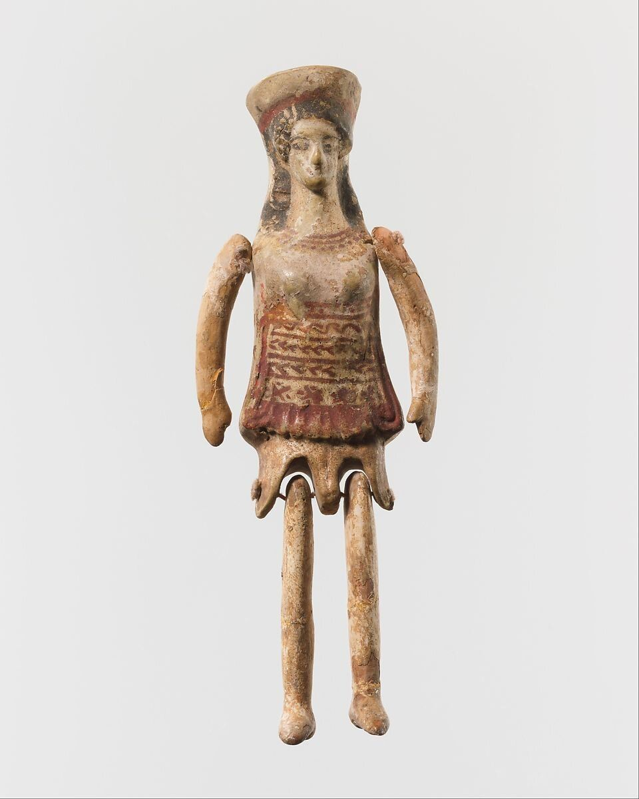
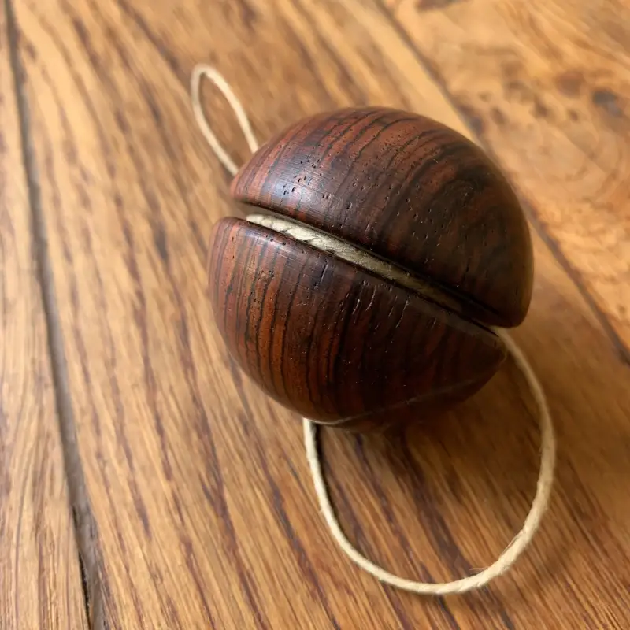
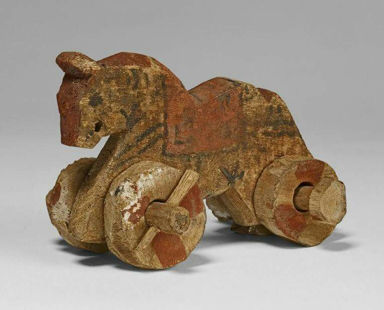

Bambole
Le prime compagne snodabili in terracotta
Periodo antico
Immaginate un mondo senza plastica, senza batterie e senza schermi. Un mondo dove il divertimento nasceva dalla terra, dal legno e dalla pura immaginazione. Nelle culle della civiltà, tra le sponde del Nilo, i templi della Grecia e le strade affollate dell'Antica Roma, i bambini non erano poi così diversi da quelli di oggi: cercavano storie, sfide e piccoli compagni di avventura.
In quest'epoca, il giocattolo non era solo un passatempo, ma un ponte tra l'infanzia e l'età adulta. Molti degli oggetti che state per scoprire venivano realizzati a mano da artigiani specializzati o dagli stessi genitori, utilizzando ciò che la natura offriva: argilla plasmata dal fuoco, avorio prezioso o semplice legno intagliato.
Spesso, questi giochi avevano anche un significato sacro: accompagnavano i piccoli nelle cerimonie di passaggio o venivano offerti agli dei come simbolo di protezione. Esplorando questi reperti, scoprirete che il desiderio di giocare è un linguaggio universale che attraversa i millenni senza mai invecchiare.

Le prime compagne snodabili in terracotta

I sonagli magici che scacciavano la paura

La sfida alla gravità nell'antichità

I primi passi verso l'autonomia